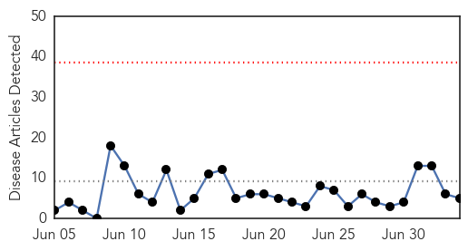
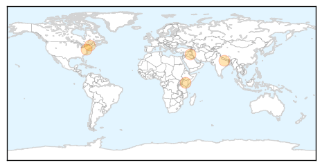

30 Day Trends
Web: 0 alerts, 0 warnings
Twitter: 0 alerts, 0 warnings
Top Articles:
- 0.965
- Anti-Vaxx Insanity: New Study Highlights the Dangers of Science Denialism
- 0.909
- Iraq: Amid massive displacement, UN agencies move to combat spread of communicable diseases
- 0.898
- Narendra Modi introduces free vaccines to tackle life-threatening diseases
- 0.891
- Drs. stress importance of vaccines
- 0.847
- Officials warning of measles spread
Top Tweets:
-
No tweets found for Jul 04, 2014
Web/News Articles
Tweets

Article Locations
Article Confidences